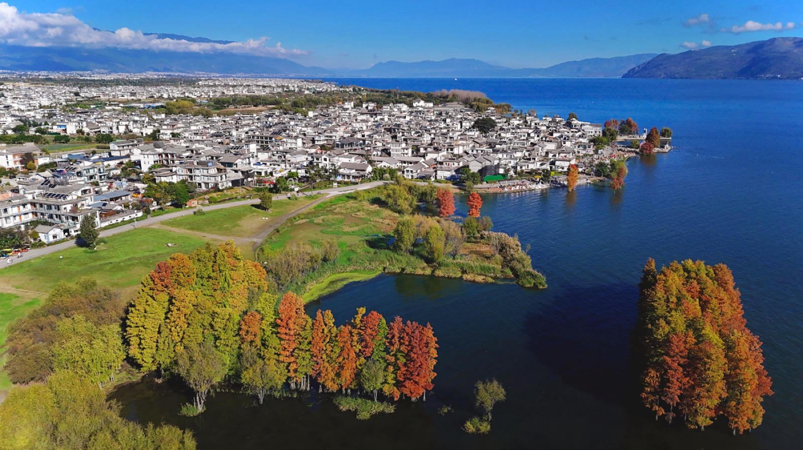
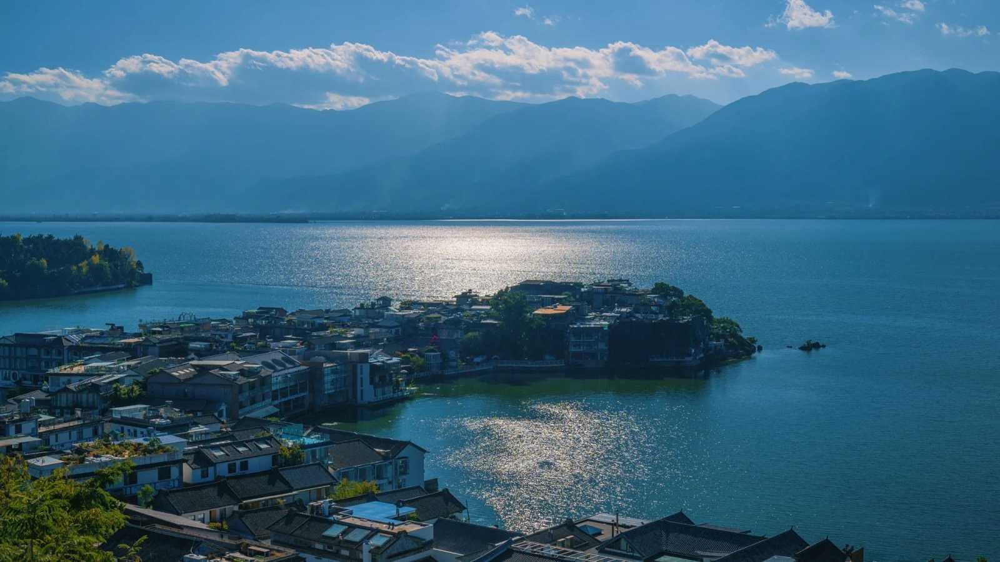
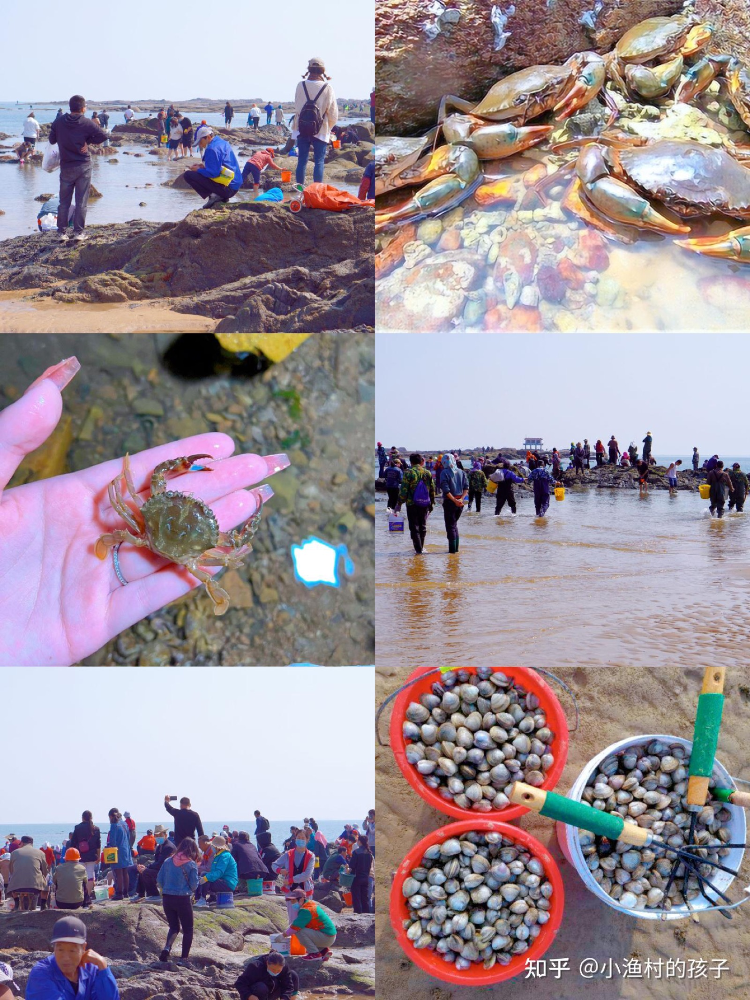
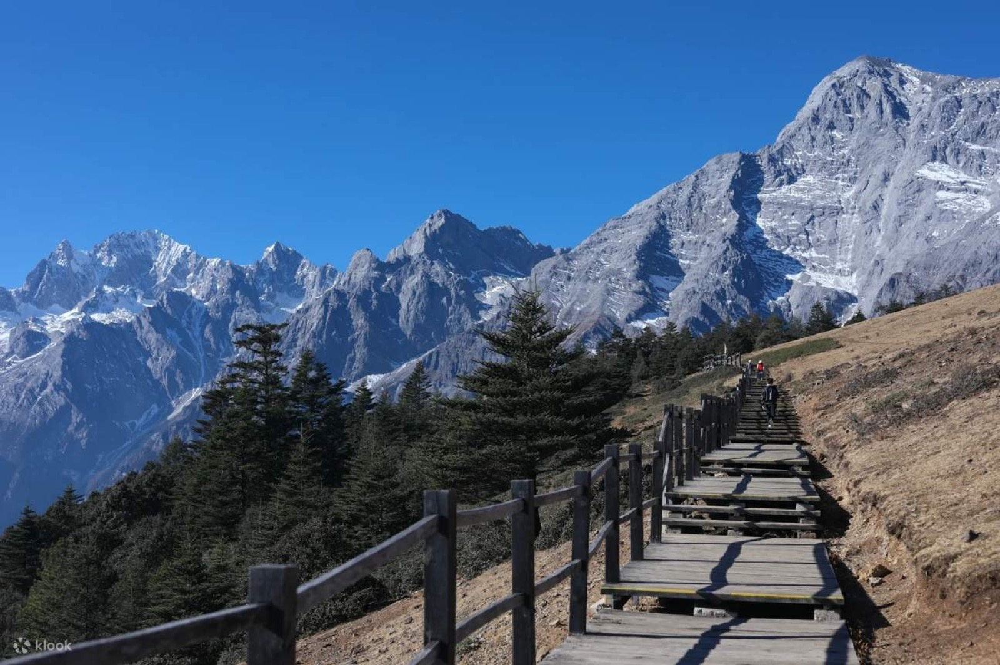
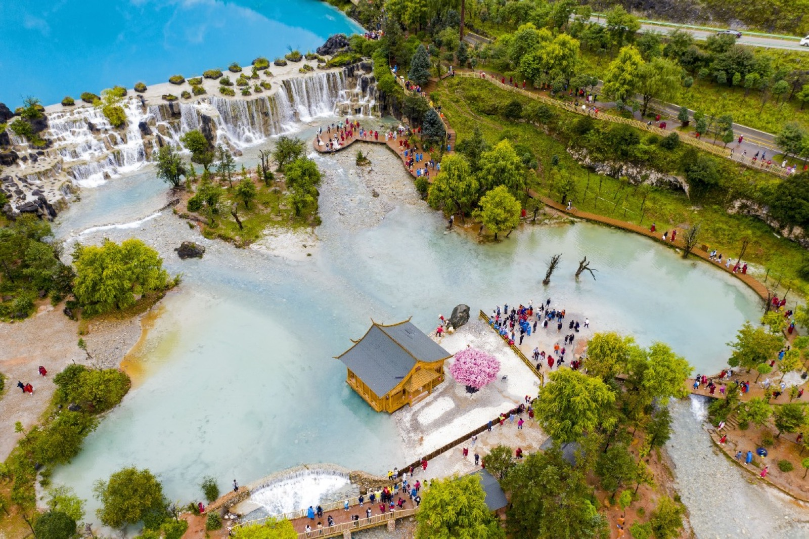
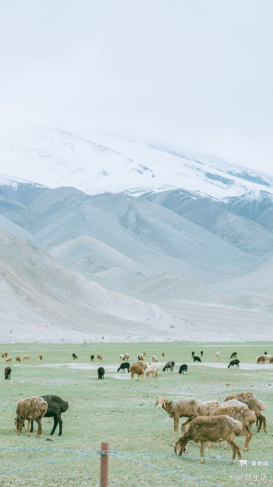

出发前一晚，哥哥把行李箱开了又关、关了又开，最后塞进去一只望远镜和三包海鸥食。他说昆明的海鸥是从西伯利亚飞来的客人，"客人见客人，要带礼物"。五月的第一缕晨光里，我们的车驶上高速，后座的孩子已经开始数路过的隧道。
滇池的海埂大坝上，成千上万只红嘴鸥盘旋成一团灰白的云。饲料举过头顶的瞬间，指尖传来一阵急促的重量——那是海鸥落在手腕上啄食的分量。哥哥愣了两秒，随即笑得直不起腰，鸥粮撒了一地。
大理：风花雪月的注脚
去大理的动车穿过彝族村寨和成片的蚕豆田。出站时风很大，当地人管这叫"下关风"——风里裹着水汽和青苔的味道。我们沿着环海西路慢慢开，左边是苍山十九峰的黛色剪影，右边是洱海一整面被夕阳烫金的水。

洱海不是海，却有海的全部气度。S 湾的日落持续了整整四十分钟，云从橘红烧到绛紫，最后沉入墨蓝。没有人说话，连哥哥都安静了。那一刻我忽然明白，所谓旅行教育，不过是让孩子的世界里，多几个这样的黄昏。
风花雪月原来不是成语，是大理的四种天气：下关风、上关花、苍山雪、洱海月。
玉龙：第一次见雪的人
索道爬升到四千五百米时，哥哥在缆车里睡着了。醒来推窗见雪，他说的第一句话是："云在我脚下。"冰川公园的栈道上，他小心翼翼捧起一捧雪，像捧着什么易碎的宝物——那是他六岁人生里第一场真正的雪。
滇池 · 海埂大坝
2024云南/昆明滇池 · 21 张


洱海
2024云南/大理洱海 · 42 张

玉龙雪山
2024云南/玉龙雪山 · 36 张

